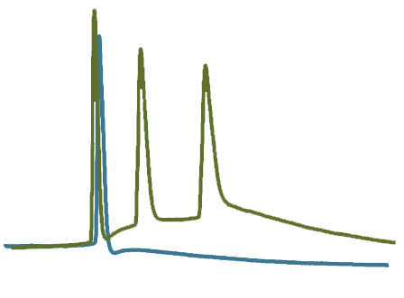

LGI1 and neuronal excitability
LGI1 (Leucine-rich glioma-inactivated protein 1) is a secreted synaptic protein that plays a fundamental role in maintaining excitatory synapse stability and regulating neuronal excitability. By forming a trans-synaptic complex with its postsynaptic receptor ADAM22 and the presynaptic partner ADAM23, LGI1 orchestrates the proper alignment and function of glutamatergic synapses. This interaction is essential for fine-tuning voltage-gated potassium channel activity and trafficking, particularly Kv1 channels, which shape action potential firing.
Thus, LGI1 is critical to maintain balanced excitation and inhibition, and its disruption originates widespread neuronal hyperexcitability. Its pathological relevance is underscored by the fact that mutations in LGI1 cause autosomal dominant lateral temporal lobe epilepsy (ADLTE), while autoantibodies against LGI1 lead to limbic encephalitis, both conditions characterized by seizures and severe disturbances in cognition and network stability.
Altogether, LGI1 stands as a key molecular regulator linking synaptic structure, receptor dynamics, and ion channel modulation to the proper function of neural circuits.
Explore LGI1 research